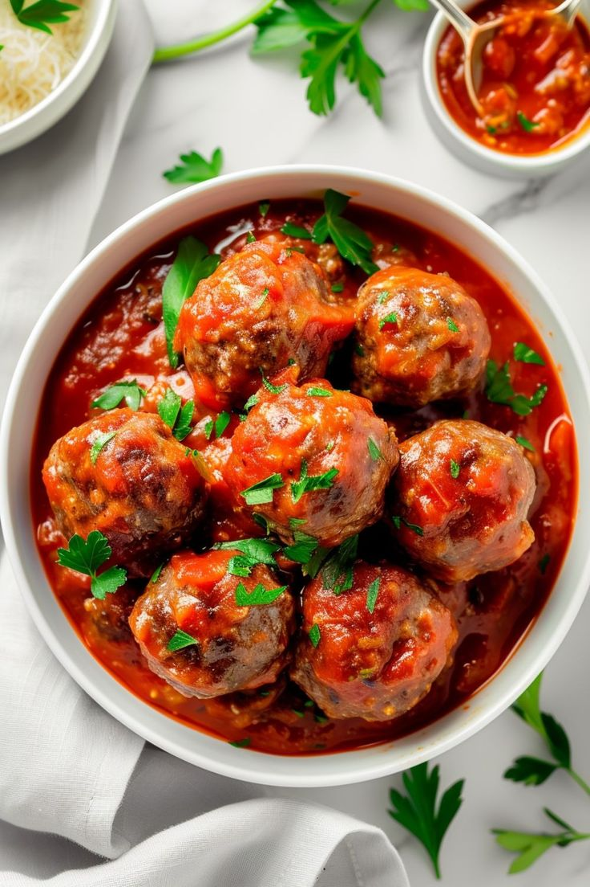

Juicy, tender, and seasoned with fresh herbs and Parmigiano-Reggiano! Simmered in a slow-cooked San Marzano tomato marinara sauce, perfect for high-protein muscle building.

In a large bowl, combine lean minced beef, panko breadcrumbs, whole eggs, minced garlic, finely grated Parmesan, chopped parsley, sea salt, and black pepper.
Form into 1.5-inch golf-ball-sized meatballs. Lightly coat your hands in olive oil to prevent sticking and ensure a smooth round shape.
Heat olive oil in a deep skillet over medium heat. Brown meatballs on all sides for 5–6 minutes to lock in juices and build a savory caramelized crust.
Pour in crushed tomato puree and dried oregano. Cover and simmer gently for 20 minutes until meatballs are cooked through and tender. Serve with basil and fresh parmesan.